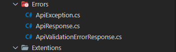
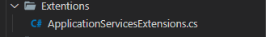
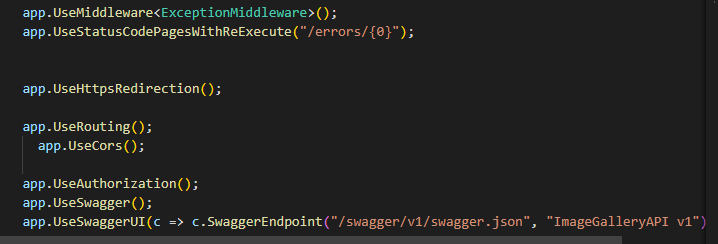
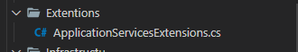
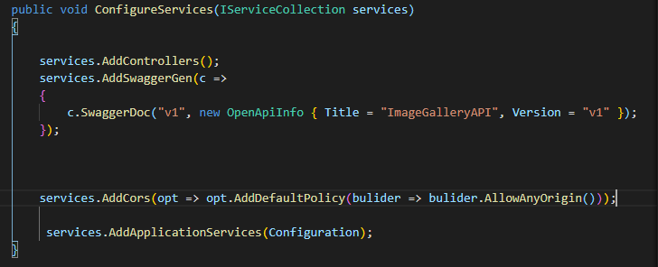
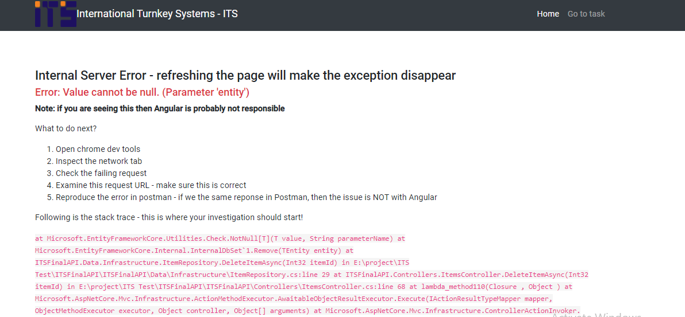
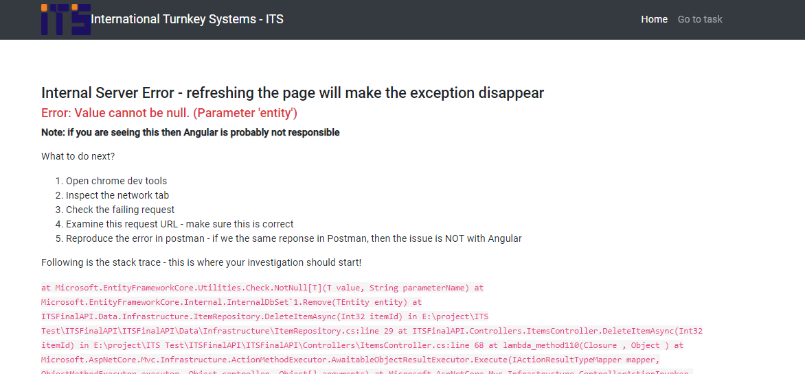
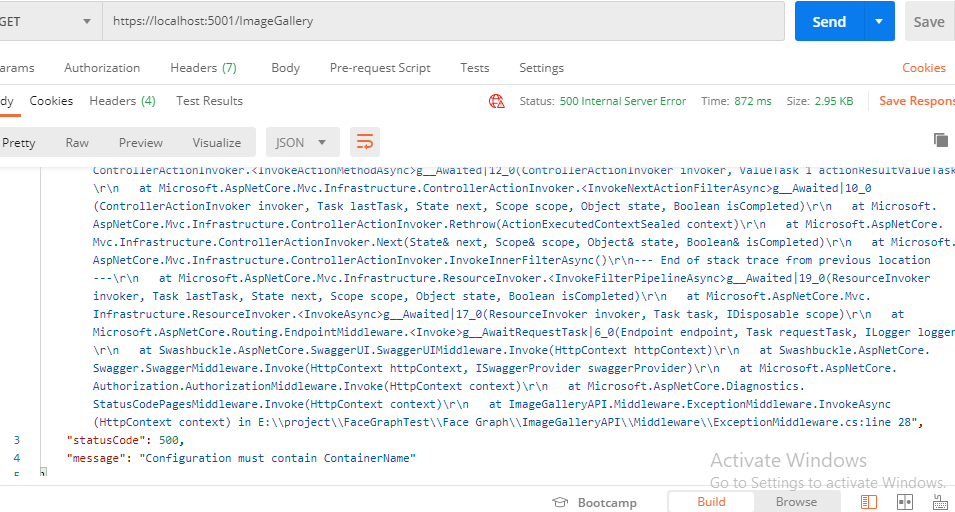

International Turnkey Systems - ITS - "Simple Documentation"
My Name: Beshoy Grace
What i used in this application?
- Error handling

- Middelware for prevent any error

- Add Middelware to catch any error from client or server

- Make folder services extentions to add all services

- Add extentions to services to make it reduce like that

- If the client send error request iam make the response simple to understand it

- Make interceptor to catch any error like that , and appear it to client

- If the server has error
make response send message to all errors

- ngx-bootstrap && angular matrial
- Interfaces && Infrastructure
- Use alertify as notification
Thanck You "International Turnkey Systems - ITS"